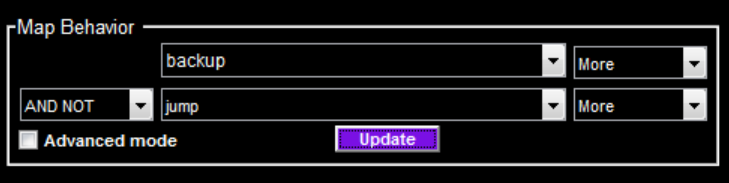
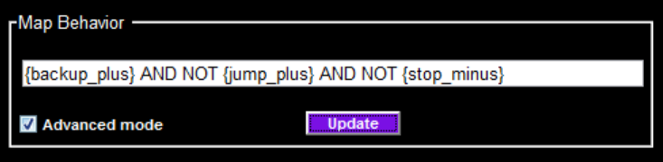
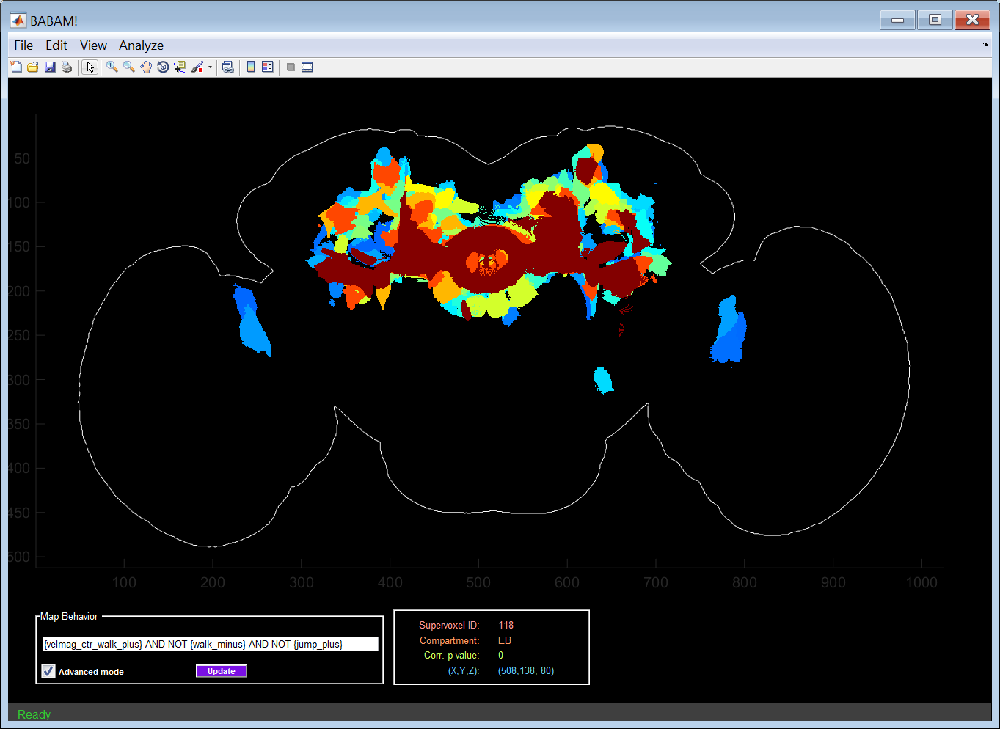
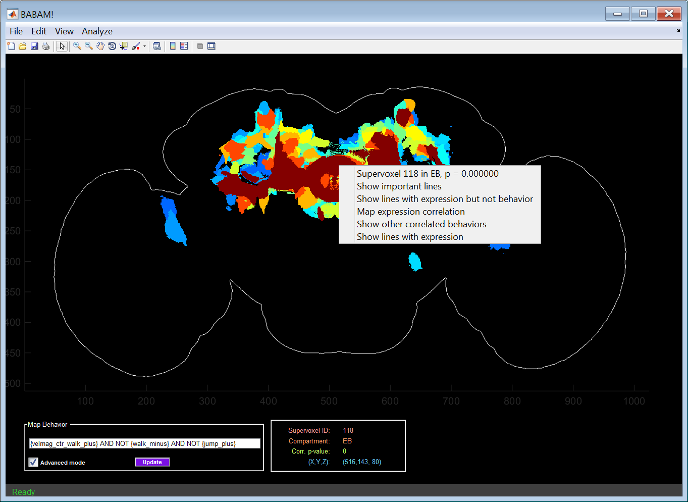
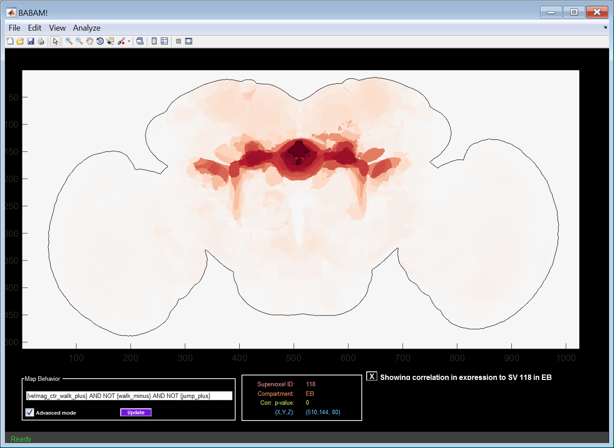
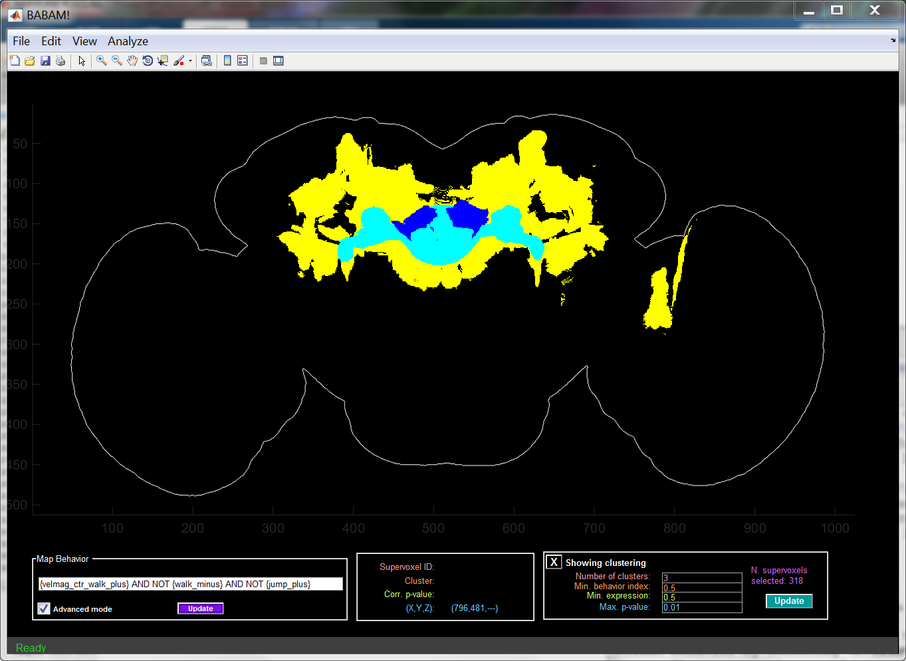
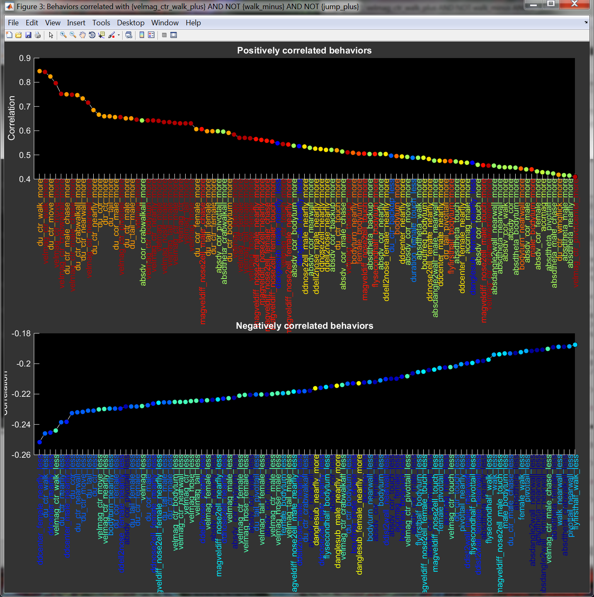
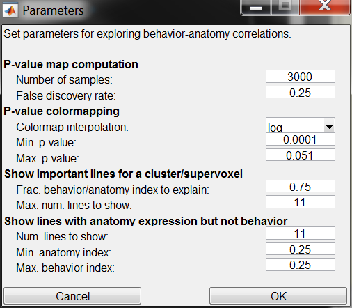
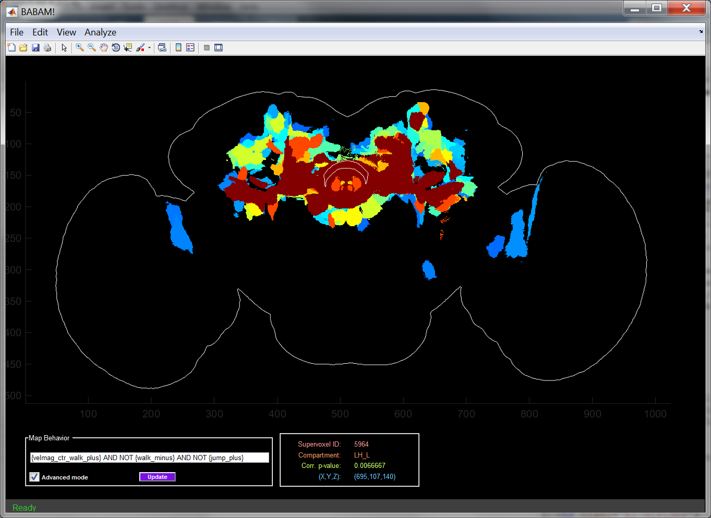

BABAM User Guide
The Browsable Atlas of Behavior-Anatomy Maps (BABAM) is a Graphical User Interface for exploring hypotheses of correlations between neural activity in regions of the brain and behavior for Drosophila melanogaster. These correlation hypotheses are the result of our thermogenetic neural activation screen of 2,205 lines from the Janelia GAL4 collection. More information on this data can be found here.
Contents
Clustering a Behavior-Anatomy Map
Showing Correlated Behaviors
Exporting Results
Parameters
Finding a Supervoxel
The git repository for BABAM is hosted on github.
Compiled binaries and source code releases are available here.
BABAM is a MATLAB-based program. To run it:
- Start MATLAB.
- Within MATLAB, change into the directory containing the BABAM code:
cd BABAM;
- Run StartBABAM on the command line to start BABAM:
StartBABAM;
BABAM will then try to locate the Fly Bowl behavior and expression data it needs. These values are memorized in the file .BABAM_rc.mat, so once they are entered, they will not need to be entered the next time you run BABAM. You can change the locations of any of the data within the GUI under the Edit -> Data locations menu item. BABAM needs to know the location of the following:
- Behavior Data MAT File: MAT file containing the behavior screen results. This data can be downloaded at BehaviorData.mat.
- Supervoxel Clustering Data MAT File: MAT file containing the supervoxel clustering of the brain. This data can be downloaded at SupervoxelClusteringData.mat.
- Per-line Anatomy Image Directory: Directory containing normalized, registered images of the expression patterns for each brain. This data can be downloaded at AverageAnatomyData. This data set is large, and BABAM can run without it. In this case, supervoxel-compressed representations of the per-line expression patterns will be shown. BABAM will ask whether this data is available at start-up.
Immediately after starting the GUI, the main axes will be blank. To create and show a behavior-anatomy map, use the Map Behavior panel in the bottom-left of the GUI.
- Specify a (combination of) behavior statistic(s) by:
- Click the purple Update button to perform a statistical test of the significance of the correlation between the specified behavior statistic and the expression level in each supervoxel across all GAL4 lines.
- The GUI updates the main plot to show the regions of the brain significantly correlated with the specified behavior statistic. Each supervoxel is colored by its p-value.
Specify the behavior statistics to map using the Map Behavior panel.
In Basic mode (Advanced mode not checked), you can specify the behavior statistics using the drop-down menus. Specify the first behavior statistic (e.g. backup) and whether to look for higher-than-control (More) or lower-than-control (Less) values for that statistic with the top row of drop-down menus. Using the bottom-left drop-down, select None if you want to map a single behavior statistic. Otherwise, select a logical operator (AND, OR, or AND NOT) to use when combining behavior statistics. Use the bottom row of drop-down menus to select the second behavior.

In Advanced mode, you can specify a logical combination of any number of behavior statistics using the text edit menu. For example:
{backup_plus} AND NOT {jump_plus} AND NOT {stop_minus}
Specify behavior statistic tests in {braces}, combining a behavior statistic name (e.g. backup) and whether to test for a higher-than-control (plus) or lower-than-control (minus) value for that statistic. Behavior statistics specified in the above example: {backup_plus}, {jump_plus}, and {stop_minus}. Combine these with the logical operators AND, OR, or AND NOT.

Behavior-Index Computation
The behavior index computed for a given GAL4 line, based on the logical expression specified, is a number between 0 and 1. For example, a value of 1 for Backup More indicates that the given GAL4 line performs more back-ups than control, a value of 0 indicates that the given GAL4 line does not perform more back-ups than control, and intermediate values indicate confidence. The behavior index is a thresholded and normalized version of the measured value for the behavior statistic. To logically combine multiple behavior statistics, we interpret these behavior indices as probabilities. Under this interpretation, ANDs correpond to multiplication, ORs to addition, and NOTs to the complement (1-x). Details of the computation are provided here.
Behavior-Anatomy Correlation Hypothesis Test
For the specified behavior statistic, and for each supervoxel subregion of the brain, we compute the correlation ρ between estimates of whether the supervoxel has expression and whether the behavior statistic has a high (or low) value, across all GAL4 lines. We use a bootstrapping method to compute how unexpectedly high this measured correlation is given the null hypothesis that there is no correlation between behavior and anatomy, which we estimate by shuffling the lines. The larger the number of shuffled samples, the more precise this p-value estimate will be, but the longer it will take. The number of samples can be specified in the GUI parameters.
To create a single map, a hypothesis test for positive correlation is performed for each of the 7,065 supervoxels. We suppress (by setting the reported p-value to 1) all correlations with a Benjamini-Hochberg false discovery rate (FDR) greater than 0.25. The FDR threshold can be specified in the GUI parameters.
The behavior-anatomy map is shown in the main plot axes.

Initially, the maximum projection over the z-axis is shown (well, really minimum projection, as small p-values are more significant). The viewing mode can be changed under the View menu. Options:
- Max-Z-Projection: Minimum p-value over all z-slices.
- Z-Slice: Single z-slice of the map. The z-slice shown can be changed using either the slider bar or text edit box to the right of the main axes.
- Z-slice max projection: Minimum p-value over all z-slices in three segments (top: anterior, middle: mid, bottom: posterior) of the map.
- Max-Y-Projection: Minimum p-value over all y-slices.
- Y-Slice: Single y-slice of the map. The y-slice shown can be changed using either the slider bar or text edit box to the right of the main axes.
- Y-slice max projection: Minimum p-value over all y-slices in three segments (top: dorsal, middle: mid, bottom: ventral) of the map.
The jet colormap is used to display the significance of the correlation hypothesis tests, with red indicating high significance (small p-value), and blue to black indicating low significance (large p-value). By default, a log scale is used when choosing a color, thus the difference in color between .01 and .001 should be the same as the difference between .001 and .0001. Parameters of the colormap can be changed using the P-value colormapping section of the dialog from the Edit->Parameters... menu item. These parameters are:
- Colormap interpolation: Whether to use a log scaling or a linear scaling of the p-values when selecting colors.
- Min. p-value: All supervoxels with p-values at or below this value will be colored dark red.
- Max. p-value: All supervoxels with p-values at or above this value will be colored black. Max. and min. p-values define the limits of the colormap.
The panel at the bottom-center of the GUI shows information about the supervoxel or cluster of supervoxels over which the mouse pointer is currently hovering. The following information is shown:
- Supervoxel ID: The numerical identifier of the current supervoxel. You can relocate a given supervoxel in the map using the Edit -> Find supervoxel... menu item.
- Compartment: Abbreviated name of the compartment (as defined at in Jenett et al., Cell Reports, 2012, Figure 7) which the supervoxel is contained.
- Corr. p-value: Estimated significance of the hypothesis test that there is acorrelation between the selected behavior statistic and expression in the given supervoxel.
- (X,Y,Z): Location of the mouse pointer in the image stack. For max-projections, the Z-coordinate indicates which slice has the minimum p-value at this (X,Y) location.

Right-clicking on a supervoxel results in a menu with a list of ways of understanding the source of the correlation between the selected behavior and the clicked supervoxel. The menu has the following items, all of which are described in detail in the following sections:
- Supervoxel ??? in ??, p = ???????: Information about which supervoxel was clicked. This is the same information shown in the Current Supervoxel Information Panel.
- Show important lines: Generates a webpage and figures with information about the most important lines (those with both high values for the behavior index and expression) for producing the correlation between the selected behavior and supervoxel.
- Show lines with expression but not behavior: Generates a webpage and figures with information about the with high expression in the selected supervoxel, but low values for the behavior index. These are lines for which expression in the selected supervoxel does not result in the selected behavior.
- Map expression correlation: Colors each supervoxel according to how correlated expression in that supervoxel is with expression in the selected supervoxel across all lines.
- Show other correlated behaviors: Shows other behavior statistics that are correlated with expression in the selected supervoxel. These behavior statistics are sorted by p-value from most to least significant.
- Show lines with expression: Shows lines which have high expression in the selected supervoxel, regardless of their behavior index.
By selecting the Show important lines option from the supervoxel menu, one can find and investigate GAL4 lines which both have expression in the selected supervoxel and have a high value for the selected behavior index.
More specifically, it selects lines according to the product of their behavior and anatomy indices. It selects the first n lines whose totalled behavior-anatomy-product indices account for a set fraction of the total behavior-anatomy-product indices across all lines. As reading in information about all these lines can be slow, we also limit the maximum number of lines shown to a fixed value. The number of lines selected can be controlled in the Show important lines for a cluster/supervoxel section of the dialog at the Edit->Parameters... menu item:
- Frac. behavior/anatomy index to explain: Fraction of the totalled behavior-anatomy-product indices that should be accounted for by the selected lines.
- Max. num. lines to show: Upper limit on the number of lines to show
The lines selected will be shown in three ways:
- Line-information webpage: Information for these lines about the behavioral effects of activation and their neural expression patterns will be shown in a webpage generated on the fly in the user's temporary directory. More information available below.
- Max-projection expression-pattern images: The maximum-projection image of the expression patterns for each of the lines will be plotted in a figure.
- Masked max-projection expression-pattern images: We first compute the average image stack (in 3-d) over all the selected lines. This is shown in the bottom right plot. For each of the lines, we show the maximum projection of the expression pattern masked (multiplied) by this average image stack. Thus, this max-projection will focus on common regions of expression between the selected lines. The true image stacks for each line can either be read in from disk (True) or approximated from their low-dimensional supervoxel representation (Supervoxel). The user is queried for which type of data to use with the Line average type dialog. True is slower but more accurate, and requires access to the original registered and normalized image stacks, while Supervoxel is faster but less accurate.
By selecting the Show lines with expression but not behavior option from the supervoxel menu, one can find and investigate GAL4 lines which have expression in the selected supervoxel but do not have a high value for the selected behavior index. Here, lines are ordered and selected based on the product of one minus the behavior index and the anatomy index. We limit the lines shown based on the following parameters (accessed via the Edit->Parameters... dialog:
- Num. lines to show: Maximum number of lines to select.
- Min. anatomy index: For lines selected, minimum expression level in the selected supervoxel.
- Max. behavior index: For lines selected, maximum value of the current behavior index.
Other than this change in the lines selected, the same visualizations of these lines as described for Show important lines will be shown.

Suppose that activity in supervoxel i is correlated with a behavioral effect, and, genetically, expression in supervoxel j is correlated with expression in supervoxel i. Then, we would observe a correlation between expression in supervoxel j and the behavioral effect. To examine whether this could be the case, we can look at the correlation in expression between the selected supervoxel and all other supervoxels. Selecting the Map expression correlation option from the supervoxel menu will result in coloring each supervoxel by the Pearson's correlation coefficient of its expression across our line collection between the selected supervoxel. Positive correlation is shown in red, negative correlation is shown in blue, and no correlation is shown as white. The selected supervoxel is outlined in black. To return to the behavior-anatomy correlation map, click the X box labeled Showing correlation in expression to SV ??? in ?? at the bottom right of the GUI.
By selecting the Show lines with expression option from the supervoxel menu, one can find and investigate GAL4 lines which have expression in the selected supervoxel regardless of their behavior. Here, lines are ordered and selected based only on their expression. Other than this change in the lines selected, the same visualizations of these lines as described for Show important lines will be shown.
 For each of the selected lines, the webpage shows:
For each of the selected lines, the webpage shows:
- Basic behavior statistic plot: This plot shows a small subset of the behavior measurements for the line, plotted as the number of standard deviations from control.
- Registered expression image: Max-projection image of the expression pattern. If no image is shown, it means we could not find a registered image of this line on the Fly Light webpage.
- Line behavior results link: Link to the webpage describing the behavioral effects of neural activation for the GAL4 line.
- Fly Light imagery link: Link to the webpage describing the expression pattern for the GAL4 line.
- Per-video behavior results: Link to the results video clip and plots describing the behavior of the flies in each video of the GAL4 line.
- Per-sample expression patterns: Links to all images we could find of the expression pattern of the GAL4 line.

One can cluster the supervoxels that are significantly correlated with the current behavior by selecting Cluster supervoxels under the Analyze menu. The supervoxels are clustered based on their expression patterns. Instead of looking at expression across all GAL4 lines, we cluster based on expression across a subset of the GAL4 lines — those with a high enough value of the selected behavior index and those with a high enough expression level in some correlated supervoxel(s).
The clustering will be shown in the main axes, with each cluster shown in a different color. In max-projection modes, we try to show smaller clusters above larger ones. When showing a clustering, all methods of Exploring a supervoxel are applied to the clicked cluster instead.
There are several parameters associated with the clustering, all of which can be adjusted in the panel at the bottom-right of the GUI when a clustering is shown:
- Number of clusters: How many clusters to form.
- Min. behavior index: Threshold on behavior index to use when selecting lines for computing the expression-pattern-based distance between supervoxels.
- Min. expression: Threshold on the expression level within some correlated supervoxel to use when selecting lines for computing the expression-pattern-based distance between supervoxels.
- Max. p-value: Threshold on p-value for defining which supervoxels are correlated with the current behavior.
To affect the current clustering after changing the parameters, press the Update button. To stop showing the clustering and return to the behavior-anatomy map, click the X labeled Showing clustering.

Selecting Show behaviors correlated w/ ??? from the Analyze menu results in a plot of behavior statistics that are most positively and most negatively correlated with the currently selected behavior statistics.
The current map can be exported to an image and/or to a .mat file using the options under the File->Export menu.
When exporting an image, the type of image saved is dependent on the current View Mode. In max-projection modes, a .png file containing the max-projection of the mapis saved. In slice modes, a .tiff file containing the entire map image stack is saved.
Exporting data saves a .mat file containing a number of variables. Some of the important variables stored in this mat file are:
- behaviorstring: Selected behavior index.
- bamap.behaviormap: 3-d array with the p-value associated with each voxel.
- bamap.supervoxeldata: nlines x nsupervoxels matrix describing the expression pattern for all lines.
- bamap.baindex: nsupervoxels x 1 array containing the correlation between the selected behavior statistic and expression level across lines for each suprevoxel.
- bamap.pvalue: nsupervoxels x 1 array containing the p-value of the correlation test for each supervoxel.
- bamap.qvalue: nsupervoxels x 1 array containing the FDR q-value of the correlation test for each supervoxel.
- bamap.pvalue_fdr: nsupervoxels x 1 array, same as bamap.pvalue, except with supervoxels with a FDR > the specified threshold set to 1.
- bamap.normbehaviordata: nlines x 1 array containing the behavior index for each line.
- bamap.clusterres: Information about the last clustering of the significant supervoxels.
- bamap.clustermap: 3-d array with cluster identities for each voxel.

Parameters of the visualization and algorithm can be modified using the dialog from the Edit->Parameters... menu item. The parameters are described above, and are summarized here as well:
- P-value map computation: Parameters for computing the behavior-anatomy maps.
- Number of samples: Number of shuffled samples used in each behavior-anatomy correlation hypothesis test. The larger the value, the more precise but the slower the computation will be.
- False discovery rate: Threshold on the Benjamini-Hochberg false discovery rate above which we suppress (by setting the reported p-value to 1) behavior anatomy correlations.
- P-value colormapping: Parameters for displaying the behavior-anatomy maps.
- Colormap interpolation: Whether to use a log scaling or a linear scaling of the p-values when selecting colors.
- Min. p-value: All supervoxels with p-values at or below this value will be colored dark red.
- Max. p-value: All supervoxels with p-values at or above this value will be colored black. Max. and min. p-values define the limits of the colormap.
- Show important lines for a cluster/supervoxel: Parameters dictating how many lines to show when Show important lines is selected from the supervoxel drop-down menu.
- Frac. behavior/anatomy index to explain: Fraction of the totalled behavior-anatomy-product indices that should be accounted for by the selected lines.
- Max. num. lines to show: Upper limit on the number of lines to show.
- Show lines with anatomy expression but not behavior: Parameters dictating which lines to show when Show lines with expression but not behavior is selected from the supervoxel drop-down menu.
- Num. lines to show: Maximum number of lines to select.
- Min. anatomy index: For lines selected, minimum expression level in the selected supervoxel.
- Max. behavior index: For lines selected, maximum value of the current behavior index.

If you know the numerical identifier of a supervoxel of interest (given in the Supervoxel ID field of the Current Supervoxel Information Panel), you can locate that supevoxel using the Edit->Find supervoxel menu item. After you enter the supervoxel identifier, it will outline the maximum projection of the specified supervoxel in white. If the specified supervoxel is not visible in the current view of the map (e.g. if it is not part of the max projection, or if it is not visible in the current slice), the GUI will ask if you want to switch to a slice view so that it can display the selected supervoxel.

You can view the supervoxel-based clustering of the brain by selecting Show supervoxel clustering from the View menu. Click the X next to "Showing supervoxel clustering" to return to viewing maps.
{kind=link}
{kind=link}
{kind=link}
{kind=link}
{kind=link}
{kind=link}
{kind=link}